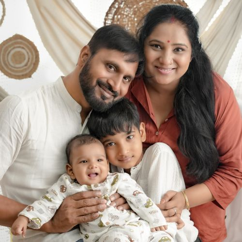

Well-Child Visits
Age-appropriate checkups, physical exams, and preventive guidance — the cornerstone of lifelong health.
Learn MoreCompassionate, child-first pediatric care — from newborn snuggles to teenage growth spurts. Checkups, vaccines, nutrition and development, all under one warm, family-friendly roof.
15+ yrs
caring for children*
We built LittleSteps around one simple belief — children heal and thrive best when they feel safe. Every room, every visit and every conversation is designed to be calm, playful and pressure-free.
Age-appropriate checkups, physical exams, and preventive guidance — the cornerstone of lifelong health.
Learn MoreAge-appropriate immunization support with friendly, anxiety-free visits and clear explanations for parents.
Learn MoreHeight, weight and head-circumference tracking on your child’s personal growth chart, visit by visit.
Learn MoreGentle, play-based checkups of speech, movement, learning and social milestones at key ages.
Learn MoreFrom first bites to picky-eater phases — practical, judgment-free feeding guidance for every age.
Learn MoreFeeding, sleep, jaundice follow-ups, safe-sleep guidance and calm support for brand-new parents.
Learn MorePediatric visits shouldn’t feel like a hospital ward. Parents tell us they choose LittleSteps for the calm, the unhurried time, and the team that remembers their child’s favorite storybook.
Color, books, toys and privacy-first exam rooms that lower anxiety.
Board-trained clinicians who kneel down to your child’s eye level — literally.
Growth, nutrition, sleep and development plans tuned to your child, not averages.
Screenings and vaccines that keep small concerns from becoming big ones.
Clear, honest answers and written take-homes after every visit.
Short waits, transparent pricing, and same-week follow-ups when needed.
Names, qualifications and photos are fictional demonstration profiles — not real, verifiable practitioners.

General Pediatrics · MD, FAAP
Demo profile · Replace with verified clinic information
View profile
Developmental-Behavioral · MD, DCH
Demo profile · Replace with verified clinic information
View profile
Nutrition & Wellness · MD, MPH
Demo profile · Replace with verified clinic information
View profile
Newborn & Adolescent · MD
Demo profile · Replace with verified clinic information
View profileThe following quotes are illustrative sample content created for this demo website — they do not represent verified, real patient reviews.
“Dr. Bennett knelt down, made a silly stethoscope sound, and my shy four-year-old actually waited for her next visit. That says everything.”

Priya R.Parent of Aarav (4) · sample testimonial“Straightforward answers, never rushed. The growth chart walkthrough helped us understand our baby’s progress without jargon.”
“The vaccine visit was handled with so much patience — distraction stickers, honest answers, and a calm kid afterwards.”
Book a friendly checkup today, or explore everything our pediatric team can help your family with.